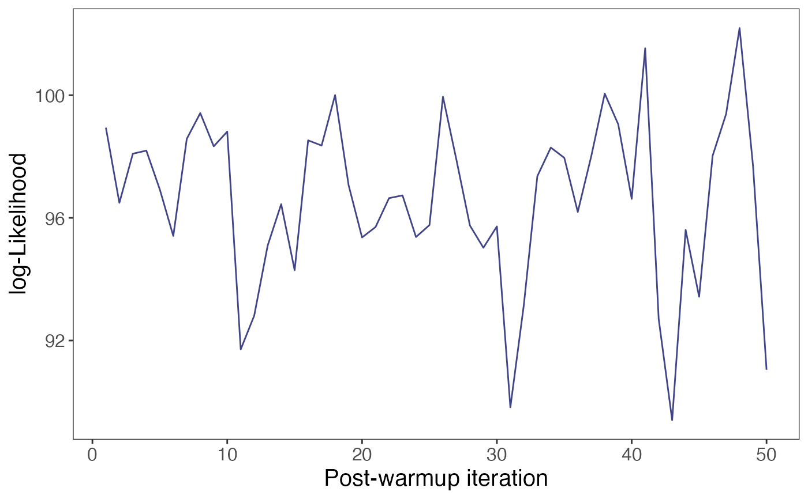

Show trace plot of the log-likelihood or estimates, of a "SPQR" class object fitted using the MCMC method
Usage
plotMCMCtrace(
object,
target = c("loglik", "PDF", "CDF", "QF"),
X = NULL,
Y = NULL,
tau = 0.5,
window = NULL
)Arguments
- object
An object of class
SPQR.- target
A character indicating the statistic/estimate for which traceplot should be plotted;
"loglik": log-likelihood (default),"PDF": probability density function,"CDF": cumulative density function,"QF": quantile function.- X
If
target != "loglik", a row vector specifying the covariate values for which the estimates are computed. Default:NULL.- Y
If
target = "PDF"ortarget = "CDF"a scalar specifying the response value for which the estimates are computed. Default:NULL.- tau
If
target != "QF", a scalar specifying the quantile level for which the estimates are computed. Default: 0.5.- window
A vector specifying the range of index of the MCMC samples for which the traceplot should be plotted. Default is
NULLindicating that the whole chain is plotted.
Examples
# \donttest{
set.seed(919)
n <- 200
X <- rbinom(n, 1, 0.5)
Y <- rnorm(n, X, 0.8)
control <- list(iter = 200, warmup = 150, thin = 1)
fit <- SPQR(X = X, Y = Y, method = "MCMC", control = control,
normalize = TRUE, verbose = FALSE)
## trace plot for log-likelihood
plotMCMCtrace(fit, target = "loglik")

# }